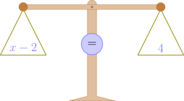
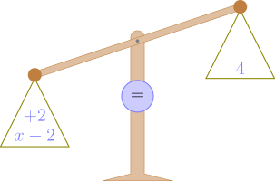
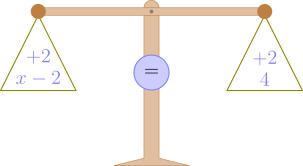

代数加减
这里有个谜题
下面方块代表的数字是多少？
\[
\Box - 2 = 4
\]
答案是 \(6\)，对吧？因为 \(6 − 2 = 4\)。
不过，在代数中，我们不用方块，而是用字母（通常是 \(x\) 或 \(y\)，但任何字母都可以）来放在这个位置。所以写成：
\[
x - 2 = 4
\]
就这么简单。这个字母（这里是 \(x\)）的意思就是“我们还不知道这个数是多少”，它常被称为未知数或变量。
如果解出了这个未知数，就可以写成：
\[
x = 6
\]
为什么要用字母？
因为：
- 写一个 \(x\) 比画个方块更方便（说的时候也比说“方块”更清楚）。
- 如果有多个未知数，可以用不同的字母表示每一个未知数。
所以 \(x\) 比方块更实用。而且不一定要用 \(x\)，也可以用 \(y\)、\(w\)……任何你喜欢的字母或符号都可以。
怎么求出来这个未知数
代数就像解谜。从类似 \(x − 2 = 4\) 这样的式子开始，目标是得到像 \(x = 6\) 这样的结果。
不要直接说“显然 \(x=6\)”，我们可以清晰地、一步一步找到答案：
- 首先需要搞清楚去掉什么，才能变成“x = ...”的形式
- 用相反的方法去掉它（加和减是相反的）
- 对等号两边都做同样的操作
例如，要去掉 \(x - 2 = 4\) 中的 \(−2\)，就反过来操作，对两边都加上2
\begin{align*}
x - &2 = &4 \\
+ &2 &+2 \\
\hline \\
&0 &6
\end{align*}
结果就是：
\[
x + 0 = 6
\]
解出来了：
\[
x = 6
\]
为什么要这么做？
为了保持两边平衡。例如，下图中天平处于平衡状态：

但是左侧加上 \(2\) 以后打破平衡了：

为了重获平衡，需要在右侧也加上 \(2\)：

记住，为了保持平衡，在等号一侧做了什么操作，在另一侧也得做同样的操作。
另一个谜题
试试看解这个：
\[
x + 5 = 12
\]
我们想要的是 \(x = \cdots\) 这样的结果，但 \(+5\) 挡住了路！
可以用 \(−5\) 来抵消它（因为 \(5−5=0\)）。那就从两边都减去 \(5\)：
\[
x + 5 −5 = 12 −5
\]
算一算。由于 \(5−5 = 0\)，\(12−5 = 7\)，就变成：
\[
x + 0 = 7
\]
也就是：\(x = 7\)
解出来了！